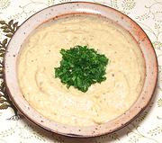

|
Baba GhannoujLevant - Baba Ghannouj | ||||
| Serves: Effort: Sched: DoAhead: |
4 app ** 45 min Yes |
A very popular appetizer spread / dip in the Near East, and rightly so! Some recipes put in a tablespoon of ExtV Olive Oil, but I find this unnecessary - tahini has plenty of oil. | |||
|
|
14 1/4 1/4 2 1-1/2 ---- |
oz c c cl t --- |
Eggplant (1) Lemon Juice Tahini (2) Garlic Salt -- Garnish Parsley, flat |
Some recipes mix some of the parsley into the spread. Make - (45 min - 20 min work)
|